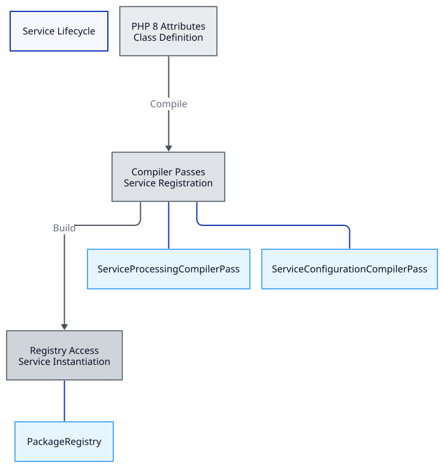

Service Lifecycle in Derafu Backbone
This document explains the lifecycle of services within Derafu Backbone, from definition to usage, providing insights into how services are discovered, configured, and instantiated.
- Three-Phase Lifecycle
- 1. Definition Phase
- 2. Discovery Phase
- 3. Usage Phase
- Understanding the Flow
- Benefits of This Lifecycle
- Troubleshooting the Lifecycle

Three-Phase Lifecycle
Derafu Backbone services go through three distinct phases during their lifecycle:
- Definition Phase: How services are defined in code.
- Discovery Phase: How services are discovered and registered.
- Usage Phase: How services are instantiated and used.
Understanding this lifecycle is crucial for developing with Backbone and troubleshooting any issues that may arise.
1. Definition Phase
The definition phase is where you define your Backbone services in code.
Class Definition with PHP 8 Attributes
The cornerstone of Backbone’s service definition is PHP 8 attributes. These attributes provide metadata about your services and eliminate the need for verbose configuration:
#[Package(name: 'billing', description: 'Handles billing operations')]
class BillingPackage extends AbstractPackage implements PackageInterface
{
// Package implementation.
}
#[Component(name: 'document', package: 'billing')]
class DocumentComponent extends AbstractComponent implements ComponentInterface
{
// Component implementation.
}
#[Worker(name: 'renderer', component: 'document', package: 'billing')]
class RendererWorker extends AbstractWorker implements WorkerInterface
{
// Worker implementation
}
The attributes provide several key pieces of information:
- Service type: Package, Component, Worker, Job, Handler, or Strategy
- Service name: The identifier used to reference the service
- Service hierarchy: The parent services (package, component, worker)
- Description: Optional description for better documentation
Abstract Base Classes and Interfaces
All Backbone services extend abstract base classes and implement interfaces:
- Abstract classes provide common functionality like configuration handling, ID generation, and standardized constructors.
- Interfaces define the contract that each service must fulfill.
This combination ensures consistent behavior and makes services interchangeable and testable.
Dependency Injection
Services declare their dependencies through constructor injection:
#[Component(name: 'document', package: 'billing')]
class DocumentComponent extends AbstractComponent implements ComponentInterface
{
public function __construct(
private readonly BuilderWorker $builderWorker,
private readonly RendererWorker $rendererWorker
) {
}
public function getWorkers(): array
{
return [
'builder' => $this->builderWorker,
'renderer' => $this->rendererWorker,
];
}
// Other component implementation.
// It's recommended to create getters for the dependencies. This will
// provide safe type hinting and autocompletion.
}
This explicit declaration of dependencies:
- Makes dependencies clear and traceable.
- Facilitates testing through mocking.
- Allows the DI container to resolve dependencies automatically.
- Ensures services are properly initialized.
2. Discovery Phase
The discovery phase is where defined services are found, processed, and registered in the dependency injection container.
Compiler Passes
Backbone uses Symfony’s compiler passes to discover and process services:
ServiceProcessingCompilerPass
This compiler pass:
- Scans all service definitions in the container.
- Identifies classes with Backbone attributes.
- Extracts metadata from attributes.
- Creates and registers service definitions.
- Adds appropriate tags for later reference.
- Mark all services as lazy services.
- Mark only packages as public services.
The result is that all Backbone services are properly registered in the container, with appropriate tags and metadata.
ServiceConfigurationCompilerPass
This compiler pass:
- Finds services that implement
ConfigurableInterface. - Matches them with configuration from parameters.
- Adds method calls to set configuration when the service is created.
This ensures that services receive their configuration during instantiation.
Registration and Aliasing
During the discovery phase, services are registered in the container and aliased for easier access:
// Original service ID (class name).
App\Billing\DocumentComponent
// Aliased as (from attribute metadata).
billing.document
These aliases make it easier to reference services by their logical names rather than class names.
3. Usage Phase
The usage phase is where services are actually instantiated and used at runtime.
Lazy Loading
By default, Backbone services are registered as lazy services. This means:
- They’re only instantiated when actually needed.
- A proxy is created that loads the real service on first method call.
- This improves performance by avoiding unnecessary service instantiation.
Accessing Services
Services can be accessed through the Package Registry:
// Get a package from the registry.
$billingPackage = $packageRegistry->getPackage('billing');
// Get a component from the package.
$documentComponent = $billingPackage->getComponent('document');
// Get a worker from the component.
$rendererWorker = $documentComponent->getWorker('renderer');
// Use the worker.
$pdf = $rendererWorker->render($data);
Each level in the hierarchy provides access to the level below it, creating a discoverable API.
Configuration Application
When a service is instantiated:
- The container resolves its dependencies.
- Dependencies are injected via the constructor.
- Configuration is applied via a method call (if the service is configurable).
- The service is ready to use.
This ensures that services are fully initialized before use.
Understanding the Flow
The complete flow from definition to usage:
- Define services using PHP 8 attributes.
- Compile the container, triggering discovery and registration.
- Build the container for runtime use.
- Access services through the registry.
- Use services to perform domain operations.
Benefits of This Lifecycle
This lifecycle approach provides several benefits:
- Discoverability: Services are easily discoverable through attributes.
- Configuration: Services receive appropriate configuration automatically.
- Lazy Loading: Only services that are actually used are instantiated.
- Type Safety: The full hierarchy is type-safe through interfaces.
- Testability: Dependencies are explicit and can be mocked for testing.
Troubleshooting the Lifecycle
Common issues and how to address them:
- Service not found: Ensure attributes are correctly defined and the compiler pass is registered.
- Configuration not applied: Check that your configuration keys match the expected structure.
- Dependencies not resolved: Verify that all dependencies are correctly registered in the container.
- Performance issues: Consider caching the compiled container in production.
By understanding the complete service lifecycle in Derafu Backbone, you can effectively develop, configure, and troubleshoot your application.